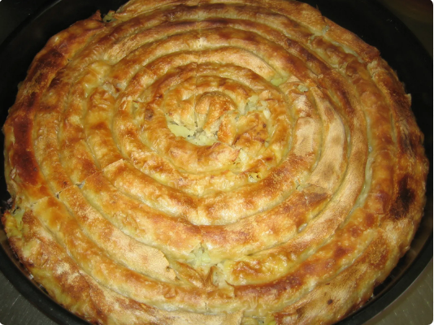

Krompirusa

Sastojci
- Oko 500gr bijelog,mekog brasna
- 1-2 kaskice soli
- Malo ulja
- Po potrebi mlake vode
- Oko 2 kg krompira
- Glavica luka
- Malo soli i bibera
- 2-3 dcl vode
- Prstohvat soli
Priprema
- Zamjestiti tijesto tako da sastavimo brasno i so pa mlakom vodom mijesimo dok ne bude “taman”,ni premekano ni pretvrdo, i da se ne lijepi. Na kraju oblikovati rukama koje smo navlazili uljem.
Ostaviti par sati u frizideru, pokriveno providnom folijom ili kesom. Moze i cijelu noc, a dovoljno je par sati.
- Prije na 20 ak min pravljenja izvaditi iz frizidera, skloniti foliju i ostaviti da malo stoji. Krompir nasjeckati ostrom konzervom na kockice. Luk takodjer (moze i nozem ili rendetom). Ali najljepsa krompirusa je s krompirom rezanim upravo konzervom na kockice.Nek stoji u vodi da ne pocrni.
- Pobrasniti podlogu i razviti 1 ili dvije jufke, kako vam volja. Nauljiti ih i ostaviti da malo odstoji. Za to vrijeme pripremiti tepsiju, a rernu upaliti na najjace.Jufke razvlaciti oklagijom i rukama. Krompir ocijediti te dodati soli i bibera.
Filovati jufku i redati u namascenu tepsiju, u obliku zvrkova, velikog zvrka, uzduzno….ima dosta nacina. Ja svaki put pravim razlicito. Na slici je standardno bosanski – u veliki krug, u okrugloj tepsiji.
- Kada je ispunjena cijela tepsija staviti u dobro zagrijanu rernu i peci dok fino ne porumeni. Uvijek nozem provjeriti je li pita pecena odozdo. Peci i na donjoj rerni da se fino zapece. Ja licno volim da je punooo rumena :)
Kad je zaljev prokuhao pitu zaliti i vratiti u rernu koju smo ugasili. Tako drzati par minuta te izvaditi i poklopiti plehom.